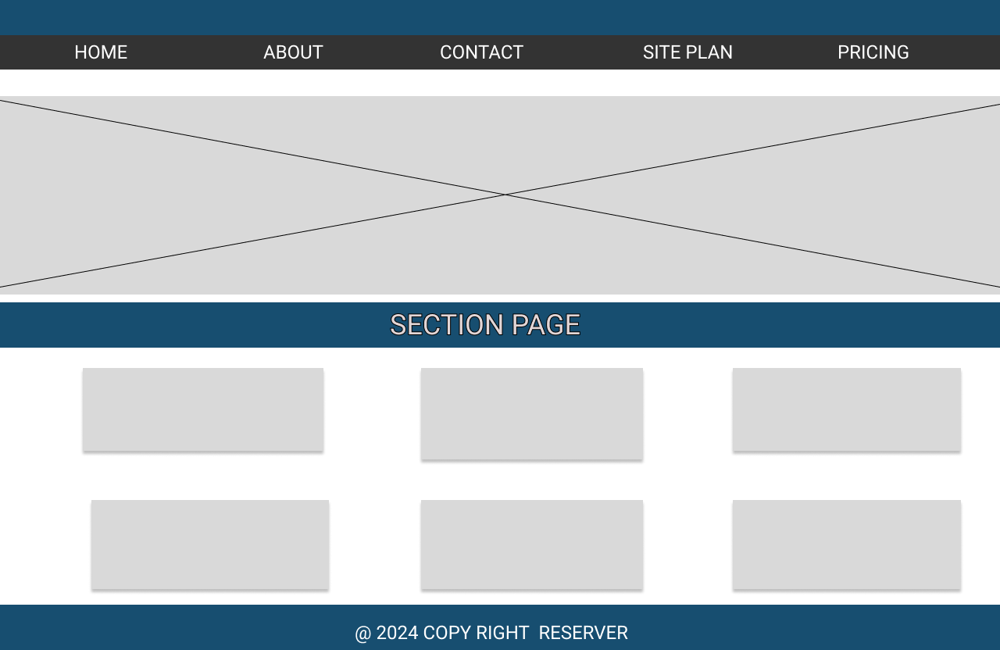
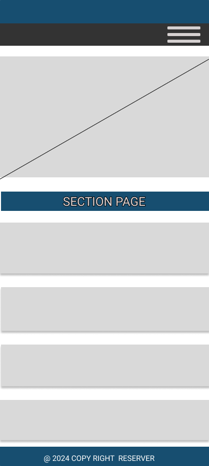

Site Name : Naija Chamber Hub
The name "Naija Chamber Hub" was selected to emphasize its focus on Nigeria ("Naija") as a vibrant center for business and entrepreneurship. The term "Chamber" highlights the mission of supporting and promoting businesses, while "Hub" conveys the idea of a central platform for resources, networking, and opportunities. This name is relatable, modern, and well-suited for a professional chamber of commerce website.
Site Purpose
The primary purpose of the Naija Chamber Hub is to:
- Support local businesses and entrepreneurs by providing resources, networking opportunities, and visibility to help them grow and thrive in Nigeria's dynamic economy.
- Act as a central platform for promoting economic growth by connecting businesses with potential partners, investors, and government programs.
By offering comprehensive business directories, event calendars, and resources for startups and established chambers alike, the site will play a pivotal role in fostering a thriving business ecosystem in Nigeria.
Scenarios
- What events are planned for local businesses this month?
- How can I join the chamber as a business member?
- Where can I access reports on the city's economic growth?
Color Schema
- #174e70 (Deep Teal Blue): Used for headings, primary navigation, and section headers to convey professionalism and trust.
- #f2ea59 (Sunny Yellow): Used for text highlights, buttons, and calls-to-action to capture attention and add vibrancy.
- #f4f4f4 (Light Neutral Gray): Used for background and secondary elements like borders and cards to maintain a clean, professional layout.
- #333333 (Dark Neutral): Used for body text and paragraph content to ensure readability.
- #6b8166 (Muted Green): Applied to footer text and decorative elements for subtle sophistication.
- #643219 (Rich Brown): Highlights interactive elements, such as active links and hover states.
Typography
- Poppins: Used for headings to give a clean and modern look.
- Roboto: Used for body text for readability and simplicity.
Desktop View:
Mobile View:
